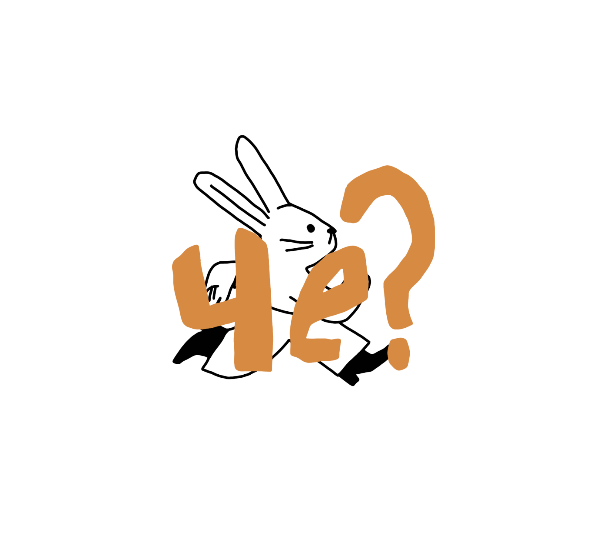
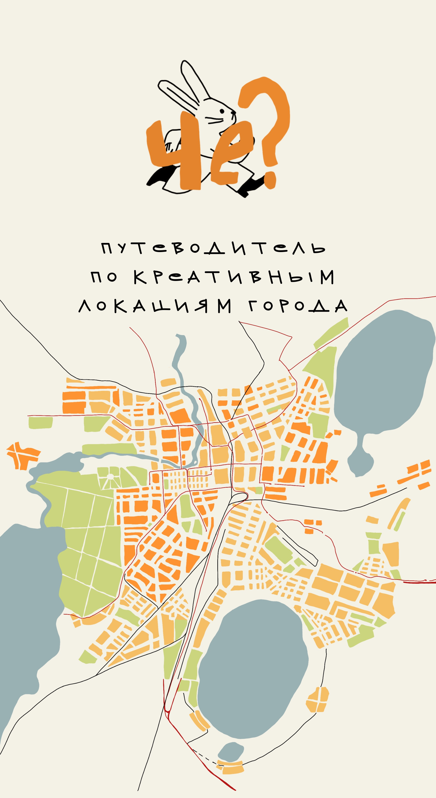
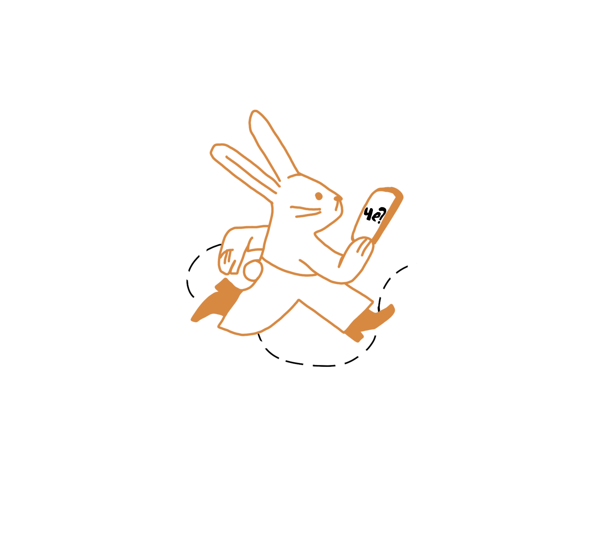

Кураторский гид по культурной идентичности города
Узнать большеПо итогам Всероссийского конкурса 2025 года Челябинск стал обладателем звания «Культурная столица России 2027 года». Этот статус открывает перед городом новые возможности: привлечение туристов, инвесторов и реализацию масштабных культурных программ.
Пришло время увидеть Челябинск за пределами индустриальных стереотипов — как город с богатым культурным потенциалом и развитыми креативными индустриями.
«Че?» — цифровой путеводитель по объектам креативных индустрий Челябинска. Кураторски отобранные локации раскрывают культурный код города: от арт-пространств и галерей до креативных кластеров и мастерских.


Получите путеводитель и исследуйте креативные локации города
Купить путеводитель